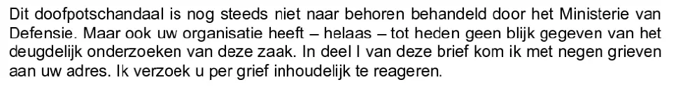

Prueba · Carta
Giltay al Defensor del Pueblo de los Países Bajos, 13 de marzo de 2018
Los nueve agravios
«El Ministerio de Defensa todavía no ha tratado como corresponde este escándalo de encubrimiento. Pero tampoco su organización ha dado —lamentablemente— muestras hasta la fecha de haber investigado debidamente este caso. En la parte I de esta carta le presento nueve agravios dirigidos a usted. Le ruego que responda sobre el fondo a cada uno de ellos». Página 1, segundo párrafo de la carta. Traducido del neerlandés; el texto original figura a continuación.
“Dit doofpotschandaal is nog steeds niet naar behoren behandeld door het Ministerie van Defensie. Maar ook uw organisatie heeft — helaas — tot heden geen blijk gegeven van het deugdelijk onderzoeken van deze zaak. In deel I van deze brief kom ik met negen grieven aan uw adres. Ik verzoek u per grief inhoudelijk te reageren.” Texto original

Los documentos ignorados
«El 21 de septiembre de 1999 entregué en persona en su oficina una carta destinada a su predecesor, mr. dr. Marten Oosting. Como anexos, esa carta contenía, entre otras cosas, siete documentos que demuestran todos ellos que el abajo firmante no padece en absoluto trastornos psíquicos. […] Pese a la documentación aportada, su institución recogió sin cuestionarlas, en su informe del 17 de diciembre de 1999, las afirmaciones relativas, entre otras cosas, a la falsa psiquiatrización del abajo firmante. Ninguno de los documentos que aporté se menciona en su informe 99/507. Resulta que su instituto de investigación los ignoró por completo». Página 4, agravio 3. Los puntos suspensivos entre corchetes […] sustituyen la frase sobre el acuse de recibo, anexo 3 de la carta. Los siete documentos figuran en la página 16, como anexos 4 a 10. Traducido del neerlandés; el texto original figura a continuación.
“Op 21 september 1999 gaf ik op uw kantoor in persoon een brief af bestemd voor uw voorganger mr. dr. Marten Oosting. Als bijlagen bevatte deze brief onder meer een zevental documenten die allemaal aantonen dat er bij ondergetekende allerminst sprake is van psychische stoornissen. […] Ondanks de aangeleverde documentatie nam uw instituut in uw rapport op 17 december 1999 de beweringen betreffende onder meer de valse psychiatrisering van ondergetekende, klakkeloos over. Geen van de door mij ingebrachte stukken wordt in uw rapport 99/507 genoemd. Ze blijken volledig te zijn genegeerd door uw onderzoeksinstituut.” Texto original

Por qué importa este documento
En 2018, tras la rehabilitación judicial, Giltay presentó al Defensor del Pueblo de los Países Bajos (Nationale ombudsman) nueve agravios concretos, respaldados por un expediente de diecinueve anexos. Esta es la carta con la que lo hizo. En ella, Giltay pide al Defensor del Pueblo que responda sobre el fondo a cada agravio. La carta menciona también que antes había entregado ejemplares de su libro en la oficina del Defensor del Pueblo, en parte a petición de uno de los propios empleados de este. En su respuesta del 10 de abril de 2018, una carta de una sola página, el Defensor del Pueblo no entró en el fondo de los agravios: no veía motivo para volver sobre la postura adoptada anteriormente y dio por concluida la correspondencia.
Procedencia
- Documento
- Carta, dieciséis páginas, en dos partes, con diecinueve anexos
- Remitente
- Edwin Giltay, La Haya
- Destinatario
- El Defensor del Pueblo de los Países Bajos, el señor Reinier van Zutphen, Bezuidenhoutseweg 151, La Haya
- Fecha
- 13 de marzo de 2018
- Asunto
- Parte I: nueve agravios sobre el Defensor del Pueblo · Parte II: dos nuevas quejas sobre el Ministerio de Defensa
- Entrega
- Con la mención «in persoon afgegeven tegen bewijs van ontvangst» (entregado en mano contra acuse de recibo)
- Anexos
- Diecinueve anexos, enumerados en la página 16
- Copia a
- mr. Y. Moszkowicz, Utrecht
- Tachado
- La firma de la página 15 y nombres de terceros en las páginas 3, 4, 8, 10, 11, 13, 14 y 16 están tachados en esta copia
- Referencias
- Respondida por el Defensor del Pueblo mediante carta del 10 de abril de 2018
- Idioma
- Neerlandés
- Conservado por
- Archivo del autor
Citado en: el ensayo «La prohibición cayó, el libro quedó en pie» en los capítulos (7) «Ninguna respuesta sobre el fondo» y (9) «Registrado para siempre».
Ficha de prueba: https://
Documento: https://
Modificado por última vez el 13 de septiembre de 2026, consultado el 27 de noviembre de 2026.

Esta página es una ficha de prueba del libro El general del encubrimiento de Edwin Giltay y del sitio web que lo acompaña.